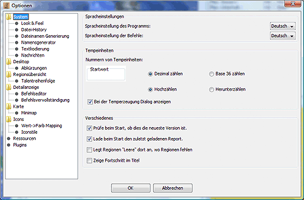
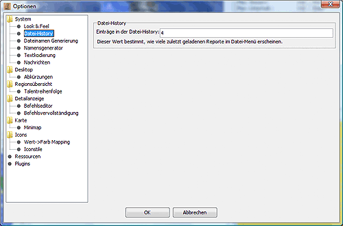
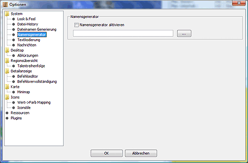

System
Hier können einige globale Systemeinstellungen gesetzt werden.

- Beim Start auf neuere Version prüfen.
Ist diese Option gewählt, überprüft Magellan beim Start, ob inzwischen eine neue Version von Magellan zum Download bereitliegt. Dazu wird eine Verbindung zum Internet benötigt. Falls eine neue Version vorhanden ist, wird Magellan wieder beendet und (sofern installiert) der Patcher gestartet, der Magellan auf den neuesten Stand bringt.
- Beim Beenden Speicherdialog zeigen.
Ist diese Option gewählt, fragt Magellan beim Beenden ob der aktuelle CR gesichert werden soll.
- Spracheinstellungen
Hier kann man die verwendete Sprache für die Magellan-Oberfläche und die Befehle einstellen. Die Änderung wird aus technischen Gründen erst nach einem Neustart von Magellan wirksam.
- Tempeinheiten
Hier kann man das Verhalten von Magellan bei der Erstellung vom Tempeinheiten festlegen. Ist in dem Feld Startwert ein Wert eingetragen, so nummeriert Magellan alle erzeugten Tempeinheiten mit dieser Nummer beginnend durch, entweder Dezimal oder im Base36 System, je nach gewählter Einstellung neben dem Kasten. Dies ist z.B. in einem Bündnis sinnvoll, in dem jeder Spieler einen reservierten Nummernbereich für Tempeinheiten zugewiesen bekommen hat, damit nicht Tempeinheiten mit gleichen Nummern in einer Region erzeugt werden.
Ist die Option Bei Temperzeugung Dialog anzeigen gewählt, wird beim Erstellen von Tempeinheiten ein zusätzliches Fenster eingeblendet, in dem einige Einstellungen vorgenommen werden können.
- Fortschrittsanzeige
Wenn man diese Option aktiviert, so wird im Titelbereich des Magellanfenstern der prozentuale Fortschritt angezeigt, d.h. die Anzahl der schon bestätigten Einheiten.
- Fontgröße
Hier kann man die relative Größe der Systemschrift einstellen. Die Änderung wird aus technischen Gründen erst nach einem Neustart von Magellan wirksam.
- Look&Feel
Hier kann man das Look&Feel der Magellan-Oberfläche auswählen. Standardmäßig stehen hier die drei Look&Feels 'Metal', 'CDE/Motif' und 'Windows' zur Verfügung.
Zusätzlich kann Magellan auch mit so genannten Skins versehen werden. Dafür muß einmalig die Datei skinlf.jar heruntergeladen und ins Magellan-Verzeichnis gelegt werden. skinlf.jar liegt unter http://eressea.upb.de/magellan/download.shtml zum Download bereit. Außerdem benötigt man so genannte Themepacks, die in das Unterverzeichnis 'skins' gelegt werden müssen. (Wenn z.B. magellan.jar im Verzeichnis C:\magellan\ liegt, dann muss skinlf.jar auch in das Verzeichnis C:\magellan\ und z.B. das Themepack whistlertheme.zip in das Verzeichnis C:\magellan\skins\). Passende Themepacks findet man unter www.mylookandfeel.com.

- Datei-History
Der hier eingetragene Wert bestimmt, wieviele zuletzt geladene Reports im Datei-Menü erscheinen.

- Namensgenerator
Wenn man diese Option aktiviert und dazu eine Textdatei einbindet, in der zeilenweise Namen aufgeführt sind, so kann man diese bei der Erstellung neuer Einheiten auswählen.